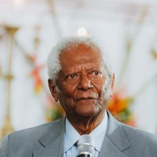

Exposição Consciência Negra
Direito e Política

Edvaldo Brito
(Muritiba, Bahia, 1937–presente)
Jurista, professor emérito da UFBA e político nascido em Muritiba, construiu uma carreira de décadas no direito tributário e na gestão pública. Foi prefeito de Salvador no final dos anos 1970, vice-prefeito e segue atuante na política soteropolitana como vereador.
Obras e Projetos de Destaque
- Estatuto Municipal da Igualdade Racial: Autor do histórico Estatuto da Igualdade Racial e de Combate à Intolerância Religiosa de Salvador (Lei Municipal nº 9.451/2019), marco normativo para políticas públicas afirmativas na capital baiana.
- Tratados e Obras Jurídicas: Autor de publicações de referência como Direito Tributário e a Constituição, Reflexões sobre o Sistema Tributário Nacional e pareceres doutrinários em Direito Civil e Tributário.
- Obras de Urbanização em Salvador: Durante sua gestão como prefeito de Salvador (1978–1979), promoveu a abertura de vias estruturantes e projetos pioneiros de saneamento e contenção de encostas na capital.
- Cátedra e Docência Emérita: Formou gerações de juristas e magistrados como Professor Emérito da Faculdade de Direito da UFBA e Professor da Universidade de São Paulo (USP).